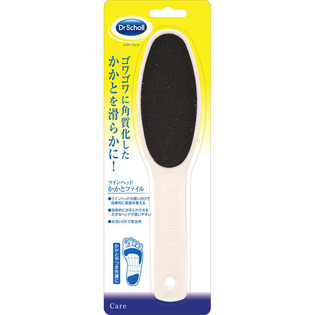

返回列表
产品名称：ドクター・ショール ツインヘッド かかとファイル

レキットベンキーザー・ジャパン ドクター・ショール ツインヘッド かかとファイル ＿
メーカー レキットベンキーザー・ジャパン
JANコード 4986803804358
商品の特徴
カサカサに荒れたかかとを滑らかに
●大きなヘッドで効率よくお手入れ
●肌の状態にあわせて使い分けできる粗い・細かいのツインヘッド
成分・分量
記載無し
用法及び用量
＜使用方法＞
皮膚をきれいに洗い、よく乾かしてからご使用ください。使用後はさっと水洗い後タオルドライし、長時間湿気の多いところには保管しないでください。糖尿病、血行障害、皮膚に炎症のある方はご使用前にかかりつけの医師にご相談ください。